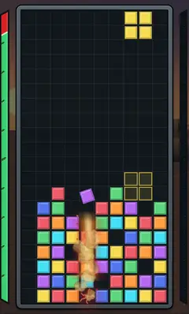

Spoilers: this page gives away the end of the Red Desert Story.
Sand Veil Cultist
Sand Veil Cultist is a monster met in Research Station. A veiled cultist from the desert's research station. It hurls fireballs at your stack and strikes at its bottom row with a sunstone staff.
Attacks
| Attack | Style | What it does | On the board |
|---|---|---|---|
| Sun Brands | Magic | Three sun-bolts brand three of your blocks. After 3 seconds, each brand still there flares, burns away its block and the one beside it, and hits you. Clear their rows first to put them out. |  |
| Sand Geyser | Melee | Blasts a block out of your bottom row and drops it on top of its column. If that empties the row, your tower drops a row. |  |
Each clip is the real fight's board, filmed from the game. It plays once it scrolls into view.
The game's advice: Clear a branded block's row inside three seconds and its brand goes out. Keep your bottom row full, or his staff drops your tower.
Weakness: spins hit it 10% harder.
Strategy
How to beat Sand Veil Cultist: gear, skills and what to do on the board, in a player's words.
Locations
- Research Station, in the Red Desert Story (fights 1, 2 of the road)
- the Endless Dungeon's Research Station: an ordinary fight, 100% of them
Combat stats
| Where | Health | Hit | Attacks every |
|---|---|---|---|
| Red Desert Story | 480 | 8–14 | — |
| Endless Dungeon, fight 1 | 720 | 12–21 | — |
| Endless Dungeon, fight 11 | 1,200 | 16–28 | — |
| Endless Dungeon, fight 21 | 1,680 | 16–28 | — |
| Dark Endless Dungeon, fight 1 | 960 | 16–28 | — |
| Dark Endless Dungeon, fight 11 | 1,440 | 20–35 | — |
| Dark Endless Dungeon, fight 21 | 1,920 | 20–35 | — |
Hit is the range before your Armor takes its share. In the Endless Dungeon an enemy grows tougher every fight; champions and omens change it further.
Drops
Each kill rolls its table twice in the Red Desert Story, twice in the Endless Dungeon and three times in its Dark. Every row is rolled on its own, so a kill can pay several.
| Item | Quantity | Rarity | Log |
|---|---|---|---|
 Gold Coin Gold Coin | 35–55 | 66.67% | |
 Sunstone Shard Sunstone Shard | 1–2 | 13.4% | ✓ |
 Cotton Fabric Cotton Fabric | 1–2 | 1/11 | |
 Minor Healing Potion Minor Healing Potion | 1 | 1/15 | |
 Mithril Ingot Mithril Ingot | 1 | 1/39 | |
 Darkwood Log Darkwood Log | 1 | 1/149 | |
 Sunstone Staff Sunstone Staff | 1 | 1/999 | ✓ |
 Cult Idol Cult Idol | 1 | 1/1,000 | ✓ |
Every kill also rolls
| Item | Quantity | Rarity | Notes |
|---|---|---|---|
| Rare Drop table (The Red Desert) | — | 1/128 | Once a kill, whatever the mode |
 Respec Orb Respec Orb | 1 | 1/12,048 | A run's first kill; rises each kill to 1/4,000 from the 50th |
 Gilded Ornament Kit Gilded Ornament Kit | 1 | 1/1,000,000 | Every kill everywhere |
Rare Drop table (The Red Desert)
One kill in 128 rolls this list once, apart from the enemy's own table. Rare Drops never count toward the Collection Log.
| Item | Quantity | Rarity |
|---|---|---|
| Gold Coin | 300–800 | 1/853 |
 Coal Coal | 40–80 | 1/853 |
| Mithril Ingot | 4–8 | 1/800 |
 Rugged Hide Rugged Hide | 2–4 | 1/1,067 |
 Adamantite Ingot Adamantite Ingot | 2–3 | 1/1,067 |
 Ipe Plank Ipe Plank | 2–3 | 1/1,280 |
 Nettle Fabric Nettle Fabric | 2–3 | 1/1,600 |
 Duskhide Duskhide | 1 | 1/3,200 |
 Magic Ring Magic Ring | 1 | 1/6,400 |
 Magic Chain Magic Chain | 1 | 1/6,400 |
 Treasure Seal Treasure Seal | 1 | 1/12,800 |
 Orichalcum Ingot Orichalcum Ingot | 1 | 1/12,800 |
 Darkwood Plank Darkwood Plank | 1 | 1/12,800 |
 Lotus Cloth Lotus Cloth | 1 | 1/12,800 |
Collection Log
Sand Veil Cultist has a page under ENEMIES in the Collection Log, in its MONSTERS section. It lists:
In the game each slot stays hidden until it drops for you.
Gallery

Trivia
Design notes and anything else worth knowing.
Changes
What changed for Sand Veil Cultist, update by update.
| Enemies | |
|---|---|
| Greenshore Story | Zombie · Slime · Squirrel · Cyclops · Oak Entling · Bandit · Bandit King · Super Zombie · Punchy · Shooty · Bernie · Bandit Elite · Cultist · Cult Leader |
| Red Desert: Dust Bowl | Sand Zombie · Wormling · Desert Worm |
| Red Desert: Sand Storm | Raider · Scrap Warlord |
| Red Desert: Pyramids | Sand Zombie · Mummy · Possessed Sarcophagus |
| Red Desert: Sand Cave | Rockling · Cave Spider · Sandstone Golem |
| Red Desert: Research Station | Sand Veil Cultist · Lesser Cult Leader · The Old Man |
| Red Desert: Hellish Desert | The Unbound |
| Elsewhere | Garbage Man · Slime King |